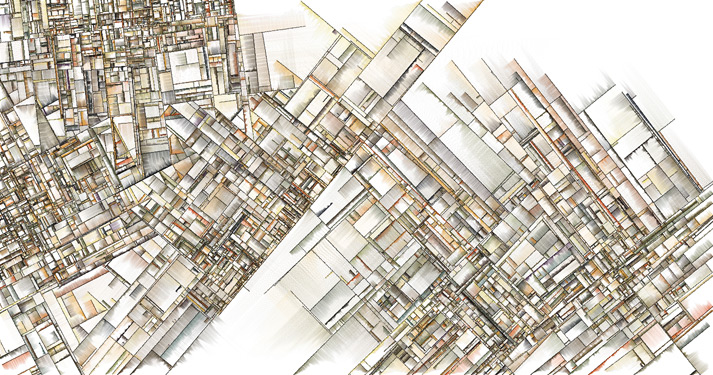
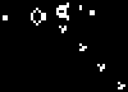

Reflexive Art
Sean Chalmers
Queensland Functional Programming Lab
sean.chalmers@data61.csiro.au
The Goals
- Introduce Reflex
svgandcanvaslibraries. - Show Haskell is capable of front-end art & animation.
- Encourage / inspire you to take the plunge!
Generative and Evolutionary Art
- Predominantly computer generated
- Repetitive algorithm influenced by random or external input
- A fascinating rabbit hole
familiar

- Title: Substrate
- Source: Complexification
bizarre
- Title: Coloured Trails (Point Advection & Rendering)
- Source: Entagma
simple
- Title: Tiled Lines
- Image: This Presentation
- Technique: Generative Artistry
Why Haskell?
- Cool Types
- Clever Types
- Silly Types
- Types that climb on rocks
- Functions as values
- Lenses
- GHC/GHCJS
traverse
- GHC/GHCJS
- Lenses
- Functions as values
- Types that climb on rocks
- Silly Types
- Clever Types
Why Reflex?
- Functional Reactive Programming
- Flexible and powerful technique for describing interactions over time
- Check the references for some links
- Come to the workshop tomorrow!!
The basics
Event: a value at a point in time.Behaviour: a value at all points in time.Dynamic: Combination of anEventand aBehaviour.- Unique to Reflex.
- 'Primitives' for creating and manipulating the above
- Lean heavily on existing abstractions:
Functor,Applicative,Monad, and friends.
Tiled Lines - Canvas
Basic Idea
- Draw a line of predetermined length
- Decide to turn 90\(^{\circ}\) left or right
- Draw a line of predetermined length
- Repeat \({(size/step)^2}\) times
Draw a line
JavaScript
context.beginPath(); context.moveTo(a,b); context.lineTo(c,d); context.closePath(); context.stroke();
- Use
ghcjs-dompackage for API functions - No need to write manual FFI calls!
Haskell
beginPath context moveTo context a b lineTo context c d closePath context stroke context
Requesting a Canvas Context
We need a canvas rendering context:
Create your canvas
(canvas, _) <- RD.divClass "canvas-wrapper" $ RD.elAttr' "canvas" canvasAttrs RD.blank
Ask
reflex-dom-canvasfor a 2d drawing contextdContext2d :: ... => CanvasConfig 'TwoD t -> m (Dynamic t (CanvasInfo 'TwoD t))
C.dContext2d (CTypes.CanvasConfig canvas mempty)
Yay!
data CanvasInfo (c :: ContextType) t = CanvasInfo { _canvasInfo_El :: RD.El t , _canvasInfo_context :: RenderContext c ...
random Have i ? can
Decide to turn left or right…
data LR = LeftToRight | RightToLeft deriving (Show, Eq)
ltor1 :: IO LR ltor1 = MRnd.uniform [RightToLeft, LeftToRight] ltor2 :: Rnd.StdGen -> (LR, Rnd.StdGen) ltor2 = first (bool RightToLeft LeftToRight . (>= 0.5)) . Rnd.randomR (0::Double,1.0) ltor3 :: MonadIO m => m LR ltor3 = bool RightToLeft LeftToRight . (>= (0.5::Double)) <$> liftIO (Rnd.randomRIO (0::Double,1.0))
Glorious loops
Repeat, lots.
imperative, mutable
for (var x = 0; x < size; x += step) { for (var y = 0; y < size; y += step) { } }
functional, immutable
let xy = [0,stp .. size] forM_ xy $ \x -> forM_ xy $ \y ->
Glorious lines
requestDomAction :: DomRenderHook t m => Event t (JSM a) -> m (Event t a) _ <- requestDomAction $ current (drawSteps <$> dCx) <@ ePost
Step input
Create a text input for our step size
dStepSize <- RD._textInput_value <$> B.bsNumberInput "Step Size" "step-size" defStepSize
Step bump
Add some buttons
eInc <- B.bsButton_ "+ Step" B.Primary eDec <- B.bsButton_ "- Step" B.Primary
eInc, eDec :: Event t ()
Step state
Keep track of the step size as it changes over time.
dStep <- R.foldDyn ($) defStepSize $ R.mergeWith (.) [ incSize <$> eStepSize eInc , decSize <$> eStepSize eDec ]
foldDyn :: (... t, ... m) => (a -> b -> b) -> b -> Event t a -> m (Dynamic t b)
eStepSize eTrigger = R.fmapMaybe (readMaybe . Text.unpack) $ R.current dStepSize <@ eTrigger
Wiring it in
_ <- requestDomAction $ current (drawSteps <$> dStep <*> dCx) <@ ( ePost <> eStep )
Drawing the lines
drawSteps stp cap cx = do DOM_CR.clearRect cx 0 0 (fromIntegral size) (fromIntegral size) DOM_CR.beginPath cx let xy = [0,stp .. size] forM_ xy $ \x -> forM_ xy $ \y -> draw x y stp cap cx DOM_CR.stroke cx
Squares - SVG

- Source: Benjamin Kovach
Basic Idea
- Randomly place a bunch of squares such that none intersect
- Randomly apply colouring and fill to each square
- Apply perlin noise to the corners of the squares
Ewww, strings
Using custom elements in
reflex-domis stringlyelAttr "rect" ("x" =: "30" <> "y" =: "40" <> "width" =: "100" <> "height" =: "200") blank
- The element tag and properties must be given as
Textvalues - Typos abound!
Introducing reflex-dom-svg
- This package provides data types for:
- All the basic shapes:
rect,path,circle, … - Their required and some optional properties
- A DSL for creating
pathproperties - The
animateelement
- All the basic shapes:
- It also provides functions, lenses, and prisms to make your life easier
Thus
What was sad
... "rect" ("x" =: "30" <> "y" =: "40" <> "width" =: "100" <> "height" =: "200")
Becomes happy
data SVG_Rect = SVG_Rect { _svg_rect_pos_x :: Pos X , _svg_rect_pos_y :: Pos Y , _svg_rect_width :: Width , _svg_rect_height :: Height , _svg_rect_cornerRadius_x :: Maybe (CornerRadius X) , _svg_rect_cornerRadius_y :: Maybe (CornerRadius Y) }
Put the G in SVG
To put a basic shape on the page
-- No child elements svgBasicDyn_ :: s -> (p -> Map Text Text) -> Dynamic t p -> m (SVGEl t s) -- Only allow a subset of SVG elements as possible child elements svgBasicDyn :: s -> (p -> Map Text Text) -> Dynamic t p -> Dynamic t (Map (CanBeNested s) (Map Text Text)) -> m (SVGEl t s)
Looks like
SVG.svgBasicDyn_ SVG.Rect -- Indicate we want a '<rect>' element SVG.makeRectProps -- Use the library provided function for handling properties dMyRectProps -- Provide a Dynamic of our SVG_Rect
Data structures for great justice
We will use a
polygonfor our squaresdata SVG_Polygon = SVG_Polygon { _svg_polygon_start :: (Pos X, Pos Y) , _svg_polygon_path :: NonEmpty (Pos X, Pos Y) }
- We benefit from all the delicious existing abstractions
Functor,Applicative,Traversable
- Apply the perlin noise function to every point in a polygon
Given
newtype Poly = Poly { unPoly :: (PolyAttrs, SVG_Polygon) } deriving (Eq,Show) makeWrapped ''Poly
We can lens &
traverseour way to victory!over (_Wrapped . _2) ( (SVGT.svg_polygon_start %~ addNoise seed scale) . (SVGT.svg_polygon_path . traverse %~ addNoise seed scale) )
Gift keeps giving
reflexprovides additional functionality for collectionssimpleList :: Dynamic t [v] -> (Dynamic t v -> m a) -> m (Dynamic t [a])
So if you have a list of polygons that will change over time…
dPolys :: Dynamic t (NonEmpty Poly) dPerlin :: Dynamic t (Poly -> Poly)
-- Polygons are kept in a 'NonEmpty' list so we always have something to draw RD.simpleList (NE.toList <$> dPolys) $ \dPoly -> -- Apply the shifting perlin noise function to our polygon SVG.svgBasicDyn_ SVG.Polygon makePolyProps (dPerlin <*> dPoly)
Moving parts
We have a few things to juggle:
- Maximum number of squares to be generated
- Changing 'scale' value for use in the perlin noise function
- Automatic or manual update to element properties
Square Count
rec (dSqCount, eSqCountChg) <- RD.divClass "sqr-inc-dec" $ do eIncSq <- B.bsButton_ "+ Sqr" B.Info _ <- RD.dynText $ (<> "# Squares") . tshow . unCount <$> dSqCount eDecSq <- B.bsButton_ "- Sqr" B.Info dSqrs <- RD.foldDyn ($) sqCount $ RD.mergeWith (.) [ incSqCount <$ eIncSq , decSqCount <$ eDecSq ]
Scale Input
dScaleInp <- RD.divClass "scale-slider" $ do RD.text "Scale" fmap (fmap realToFrac . RD._rangeInput_value) . RD.rangeInput $ B.rangeInpConf 0.0 "scale" & RD.rangeInputConfig_attributes . mapped %~ \m -> m & at "step" ?~ "0.0001" & at "min" ?~ "0.0" & at "max" ?~ "0.1"
Toggle
dFoofen <- RD.holdDyn dScaleInp $ RD.leftmost [ dScaleInp <$ eOnButton , dScaleRange <$ eOnTick ]
Game of Life - WebGL

- Source Chris Wellons
Basic idea
Alright, so brace yourself, but what about…
- Conway's 'Game of Life'…
- But running in a fragment shader…
- On the GPU…
- eh?
- eh?
Shift yaks
- Focus is no longer on drawing actions
- Now it is orchestration of actions that draw
Basic idea redux
- Initialise two framebuffers
- Populate one with random values
- Run the fragment shader (which contains the game of life)
- Execute the game of life for each pixel
- Render the result to a framebuffer, not the screen
- Paint the other framebuffer to the screen
- Flip the framebuffers
- Repeat
Initialising WebGL
- Context
- Shaders - needs compiling
- Programs - needs linking
Don't forget
- We're
- not
- writing
- javascript.
Monad transformers, woo
We can have nicer things.
newtype WebGLM a = WebGLM { runWebGLM :: ExceptT Error JSM a } deriving ( Functor , Applicative , Monad #ifdef ghcjs_HOST_OS , MonadIO #else , MonadIO , MonadJSM #endif , MonadError Error ) liftGLM :: Either Error a -> WebGLM a liftGLM = either throwError pure
nb: MonadJSM ~ MonadIO when building with GHCJS.
Unremarkable code
initShader :: GHCJS.GLenum -> Getter s Text -> s -> WebGLRenderingContext -> WebGLM WebGLShader initShader sType sL source cx = do
initProgram :: VertSrc -> FragSrc -> WebGLRenderingContext -> WebGLM WebGLProgram initProgram vs fs cx = do
Code unremarkable
Check for errors
ok <- GHCJS.liftJSM . GHCJS.fromJSValUnchecked =<< GLB.getShaderParameter cx (Just s) GLB.COMPILE_STATUS
ok <- GHCJS.liftJSM . GHCJS.fromJSValUnchecked =<< GLB.getProgramParameter cx (Just p) GLB.LINK_STATUS
Lean on abstractions to handle plumbing
vs' <- initShader GLB.VERTEX_SHADER (to unVertSrc) vs cx fs' <- initShader GLB.FRAGMENT_SHADER (to unFragSrc) fs cx GLB.attachShader cx (Just p) (Just vs') GLB.attachShader cx (Just p) (Just fs')
Abstraction to Event
Reflex helps out here too:
fanEither :: ... => Event t (Either a b) -> (Event t a, Event t b)
createGOL :: ... => WebGLRenderingContext -> m (Either Error GOL)
(eError, eGol) <- fmap R.fanEither . RD.requestDomAction $ R.current (createGOL <$> dCx) <@ ePost
eError :: Event t Error eGol :: Event t GOL
Fork in the graph
- An error - Bugger
- An initialised environment - Woot
- Reflex comes out to play, again.
Switching- There are efficiency benefits too, as disconnected pieces of the graph are garbage collected
Only what we need
The FP way, narrow your focus/function to a smaller problem.
One to display the error
golError :: ... => Error -> m ()
One to run the orchestration for our WebGL
golRender :: ... => GOLInfo t -> StdGen -> GOL -> m ()
Making the choice
_ <- RD.widgetHold (RD.text "Nothing Ready Yet.") $ R.leftmost [ golError <$> eError , golRender (GOLInfo eReset eStepOnce dTick dCx) sGen <$> eDrawn ]
Manage change
Let Reflex manage our
GOLrecord in aDynamicdGOL <- R.holdDyn gol' $ R.leftmost [ eStepRendered , eWasReset ]
Updated on a step or reset
EventeStepRendered :: Event t GOL eWasReset :: Event t GOL
Step / Reset
step :: ... => WebGLRenderingContext -> GOL -> m GOL setInitialState :: ... => StdGen -> WebGLRenderingContext -> GOL -> m GOL
eStepRendered <- glRun step . R.switchDyn $ _golAuto golInfo eWasReset <- glRun (setInitialState sGen) $ _golReset golInfo
glRun f eGo = RD.requestDomAction $ R.current ( (\c -> f c >=> draw c) <$> _golCx golInfo <*> dGOL ) <@ eGo
Recursive Definition
golRender golInfo sGen gol' = mdo dGOL <- R.holdDyn gol' $ R.leftmost [ eStepRendered , eWasReset ] let glRun f eGo = RD.requestDomAction $ R.current ( (\c -> f c >=> draw c) <$> _golCx golInfo <*> dGOL ) <@ eGo eStepRendered <- glRun step . R.switchDyn $ _golAuto golInfo eWasReset <- glRun (setInitialState sGen) $ _golReset golInfo
Wrapping Up
Nice bits
- FP graphics, in the browser?! IT WORKS!!1eleventy!
- Being able to use Mozilla Developer Network (MDN) docs is awesome
- Hackage is full of awesome packages
- linear
- Clay
- colour
Sticky bits
- Some types don't line up:
ArrayBufferViewdoesn't exist in JS - Some optional function arguments… aren't
Snip of MDN for Canvas 2D
fillfunctionvoid ctx.fill([fillRule]); void ctx.fill(path[, fillRule]);
Type of
fillfromghcjs-domfor 2D Canvasfill :: ... => CanvasRenderingContext2D -> Maybe CanvasWindingRule -> m ()
Have at it!
From here, many good things can come.
- Games
- Charts
- More art
- All driven by the power of FP
- Nothing can stop you, try something
Thank you. :)
References
- Reflex
- Workshop by Dave Laing, Day 2 - ComposeConf 2018!!
- https://github.com/reflex-frp/reflex-platform
- https://github.com/obsidiansystems/obelisk
- https://blog.qfpl.io/posts/reflex/basics/introduction/
- MDN docs
- WebGL
- Game of Life in a Fragment Shader https://nullprogram.com/blog/2014/06/10/
…and so many more, please come and ask!